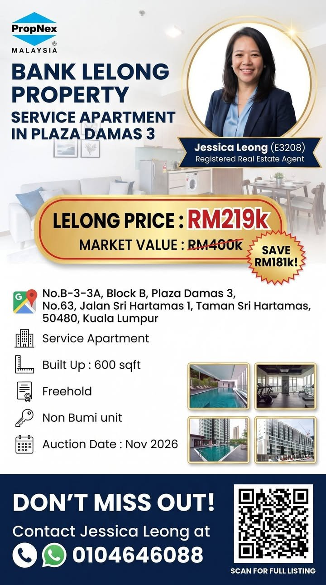

Service Apartment at Plaza Damas 3, Sri Hartamas, KL
- Lelong price
- RM219k
- Market value
- RM400k
- Auction date
- November 2026
- Type
- Service Apartment
- Tenure
- Freehold
- Size
- Built-up 600 sqft
- The post gives the auction month only (November 2026). Ask Jessica for the exact date.
Listing last updated 23 Oct 2026 · from Selangorkl Properties · status check 24 Oct 2026: no public auctioneer page found yet, so please confirm with Jessica